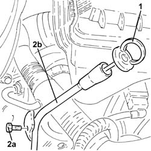

1084A16 oil dip stick pipe - r r
- Path
- Procedures > 10 ENGINE UNIT > 1084 ENGINE LUBRICATION SYSTEM > 1084A indicators/check devices > 1084A16 oil dip stick pipe - r r
- Kind
- repair procedure (removal / refitting; the operation number is the code)
- Applies to
- engines: 1.3 JTD 16v; all production periods
- Interactive page
- https://sloeber94.github.io/elrnDB-fPnd/en/#/2752629
Applies to: engines: 1.3 JTD 16v; all production periods
 Removing
Removing
 Refitting
Refitting1. Withdraw the oil level dipstick.
2. Undo the bolts (2a) and remove the engine oil dipstick pipe (2b), after releasing the band from the electrical wiring.

Applies to: engines: 1.3 JTD 16v; all production periods
Refitting
RemovingFit the engine oil dipstick in place and fix it using the bolt.
Fix the electrical wiring with the band on the engine oil dipstick tube.
Fit the engine oil dipstick in place.